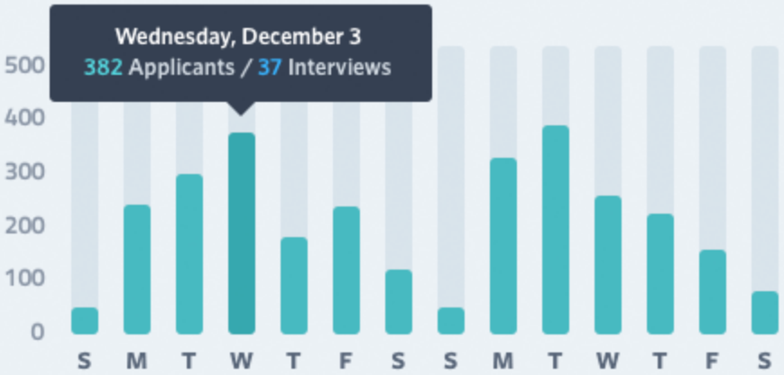

3,154APPLICANTS
1,546INTERVIEWS
912FORWARDS

| JOB DESCRIPTION | |
|---|---|
| POSITION TITLE | Customer Service Representative |
| LOCATION | San Francisco, CA |
| EMPLOYMENT TYPE | Full-time |
| EXPERIENCE | Mid-level |
| STATUS | Open |
| DESCRIPTION | The Customer Service Representative is responsible for interacting with and providing quality assistance to all radical customers, responsible for keeping up-to-date on the various product shizzle; helping the bidness reduce customer service wait times while doing a backhand spring and eating a ham sandwich. |
| HIRING LEAD | Tom Tizzy |
| APPROVED SALARY | $58,000 |